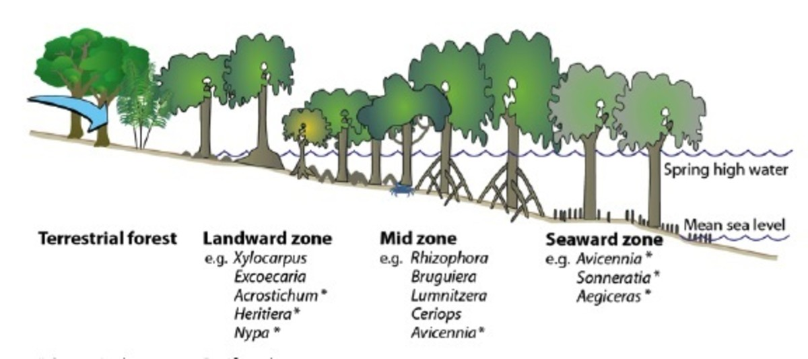

What is a mangrove?
A mangrove is not a single tree but a community of salt-tolerant trees and shrubs.
They grow where freshwater meets the sea—in river mouths, estuaries, and sheltered bays.
Key environmental factors:
- Salinity: Can handle brackish (mixed) water.
- Tides: Roots adapted to daily flooding.
- Muddy substrate: Oxygen-poor soil.
Mangrove “zones”:
- Seaward edge (often Sonneratia alba)
- Constantly flooded, thick trunks up to 13 m tall
- Mid-zone (e.g., Rhizophora apiculata)
- Characterized by “prop roots” arching into the mud
- Landward fringe (e.g., Avicennia alba)
- High pneumatophores (air roots) poking straight up

Analogy: Think of a mangrove forest as a three-layer cake:
- The bottom sponge (sea edge)
- The creamy filling (middle zone)
- The frosting on top (landward fringe)